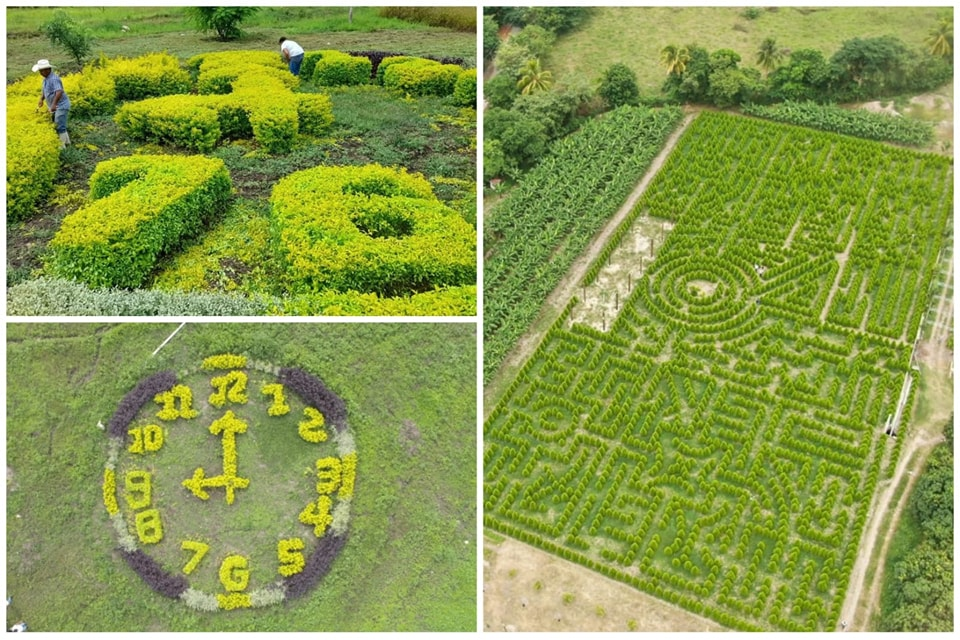

Let's Travel
Comayagua embellece las tierras hondureñas con el “Laberinto de Cipreses†más grande de Centroamérica
¿Como llegar?
Honduras continúa siendo el corazón de bellezas naturales, y desde las tierras de Comayagua, guarda el “Laberinto de Cipreses†más grande de Centroamérica, este innovador destino turÃstico se encuentra en el municipio de la Villa de San Antonio, Aldea de Flores.
El “Laberinto de Cipreses†es un espacio mágico que ofrece Honduras al mundo, un lugar perfecto para conectar con la naturaleza al contar con 2,886 árboles que adornan esta aldea que ya tiene sus puertas abiertas para todas las personas.
Este atractivo centro turÃstico fue galardonado como una de las 30 maravillas de Honduras, edición bicentenaria, debido a sus singulares encantos, ya que tomó alrededor de 3 años para desarrollar este hermoso espacio natural.
El gerente del Laberinto de Cipreses, Néstor Mendoza, manifestó que “este proyecto es de Dios”, y tras años de esfuerzo, hondureños y habitantes de todas las partes del mundo pueden disfrutar de una experiencia única acompañado de estos encantadores árboles.